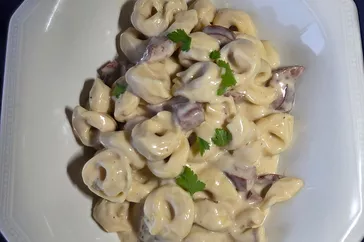

Pasta Recipe

Classic Italian Pasta
This classic Italian pasta recipe is simple and delicious. Perfect for a quick weeknight dinner!
Ingredients:
- 200g spaghetti
- 2 tbsp olive oil
- 2 cloves garlic, minced
- 1 can (400g) crushed tomatoes
- Salt and pepper to taste
- Fresh basil leaves for garnish
- Grated Parmesan cheese (optional)
Instructions:
- Cook the spaghetti according to the package instructions until al dente. Drain and set aside.
- In a large pan, heat the olive oil over medium heat. Add the minced garlic and sauté for about 1 minute until fragrant.
- Add the crushed tomatoes to the pan. Season with salt and pepper. Simmer for 10-15 minutes, stirring occasionally.
- Toss the cooked spaghetti in the tomato sauce until well coated.
- Serve hot, garnished with fresh basil leaves and grated Parmesan cheese if desired.
Back to Recipes